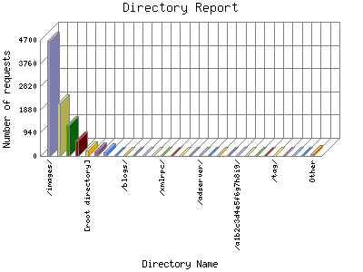

Analog 5.24
Analog 5.24 Report Magic for Analog 2.13
Report Magic for Analog 2.13The Directory Report analyzes accesses to this web site's directories. This information can be useful in determining the most requested areas.
This report shows all results. This report is sorted by number of requests.

| Directory Name | Number of requests | Percentage of bytes transferred in the last 7 days | |
|---|---|---|---|
| 1. | /images/ | 4,653 | 11.48% |
| /images/sidenav_images/ | 1,982 | 3.89% | |
| 2. | /includes/ | 2,135 | 3.41% |
| /includes/corpnav/ | 2,134 | 3.41% | |
| 3. | /text/ | 1,240 | 81.17% |
| /text/booking/ | 228 | 13.90% | |
| /text/common/ | 269 | 18.50% | |
| /text/admin/ | 290 | 34.70% | |
| /text/utils/ | 126 | 7.8% | |
| /text/login/ | 152 | 3.70% | |
| /text/forms/ | 5 | 0.20% | |
| /text/canadians/ | 1 | 0% | |
| /text/business/ | 1 | 0% | |
| /text/generic/ | 5 | 0% | |
| 4. | /css/ | 625 | 1.17% |
| 5. | [root directory] | 214 | 0.48% |
| 6. | /scripts/ | 176 | 0.48% |
| 7. | /cfide/ | 148 | 1.69% |
| /cfide/scripts/ | 148 | 1.69% | |
| 8. | /horde/ | 7 | 0.2% |
| /horde/imp/ | 2 | 0% | |
| /horde/util/ | 1 | 0% | |
| /horde/chasque/ | 1 | 0% | |
| /horde/horde/ | 1 | 0% | |
| 9. | /blogs/ | 6 | 0% |
| /blogs/xmlsrv/ | 3 | 0% | |
| 10. | /ads/ | 6 | 0% |
| 11. | /blog/ | 6 | 0% |
| /blog/xmlsrv/ | 3 | 0% | |
| 12. | /phpadsnew/ | 6 | 0% |
| 13. | /xmlrpc/ | 3 | 0% |
| 14. | /blogtest/ | 3 | 0% |
| /blogtest/xmlsrv/ | 3 | 0% | |
| 15. | /projects/ | 3 | 0.1% |
| /projects/horde/ | 1 | 0% | |
| /projects/pkg-horde/ | 1 | 0% | |
| /projects/horde-agora/ | 1 | 0% | |
| 16. | /xmlsrv/ | 3 | 0% |
| 17. | /adserver/ | 3 | 0% |
| 18. | /phpads/ | 3 | 0% |
| 19. | /community/ | 3 | 0% |
| 20. | /drupal/ | 3 | 0% |
| 21. | /a1b2c3d4e5f6g7h8i9/ | 3 | 0% |
| 22. | /b2/ | 2 | 0% |
| /b2/xmlsrv/ | 2 | 0% | |
| 23. | /phpgroupware/ | 2 | 0% |
| 24. | /portal/ | 7 | 0% |
| /portal/cacti/ | 4 | 0% | |
| 25. | /tag/ | 2 | 0% |
| /tag/horde/ | 1 | 0% | |
| 26. | /b2evo/ | 2 | 0% |
| /b2evo/xmlsrv/ | 2 | 0% | |
| 27. | /cacti/ | 5 | 0% |
| 28. | /wordpress/ | 2 | 0% |
| 29. | /hordedev/ | 1 | 0% |
| 30. | /webmail_horde/ | 1 | 0% |
| 31. | /archives/ | 1 | 0% |
| /archives/horde/ | 1 | 0% | |
| 32. | /temp/ | 1 | 0% |
| /temp/horde/ | 1 | 0% | |
| 33. | /horde-3.0.9/ | 1 | 0% |
| 34. | /api/ | 1 | 0% |
| /api/horde/ | 1 | 0% | |
| 35. | /proj/ | 1 | 0% |
| /proj/horde/ | 1 | 0% | |
| 36. | /category/ | 1 | 0% |
| /category/horde/ | 1 | 0% | |
| 37. | /horde-webmail/ | 1 | 0% |
| 38. | /webmail/ | 1 | 0% |
| 39. | /horde2/ | 1 | 0% |
| 40. | /horde3/ | 1 | 0% |
| 41. | /people/ | 1 | 0% |
| /people/horde/ | 1 | 0% | |
| 42. | /netmail/ | 1 | 0% |
| /netmail/horde/ | 1 | 0% | |
| 43. | /horde-3.0/ | 1 | 0% |
| 44. | /wiki/ | 1 | 0% |
| /wiki/horde/ | 1 | 0% | |
| 45. | /gold_horde/ | 1 | 0% |
| 46. | /video/ | 1 | 0% |
| /video/horde/ | 1 | 0% | |
| 47. | /zombie-horde-2/ | 1 | 0% |
| 48. | /zombie-horde/ | 1 | 0% |
| 49. | /imp/ | 1 | 0% |
| 50. | /silver_horde/ | 1 | 0% |
| 51. | /pub/ | 1 | 0% |
| /pub/horde-cvs/ | 1 | 0% | |
| 52. | /stats/ | 3 | 0% |
| 53. | /ip1/ | 1 | 0% |
| 54. | /ggcms/ | 2 | 0% |
| /ggcms/admin/ | 2 | 0% | |
| 55. | /clf02/ | 36 | 0% |
| /clf02/images/ | 36 | 0% | |
| 56. | /phpmyadmin/ | 1 | 0% |
| 57. | /level/ | 1 | 0% |
| /level/16/ | 1 | 0% | |
This report was generated on February 18, 2007 02:24.
Report time frame February 4, 2007 20:17 to February 18, 2007 03:34.
| Web statistics report produced by: | |
| Analog 5.24 | Report Magic for Analog 2.13 |